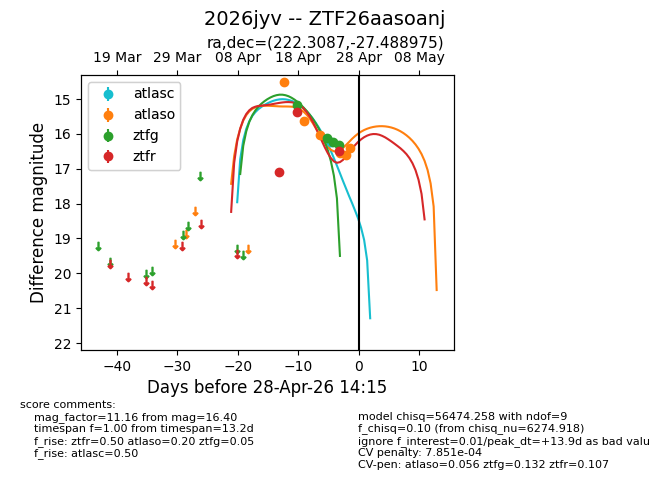
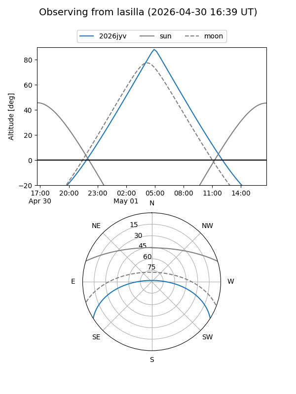
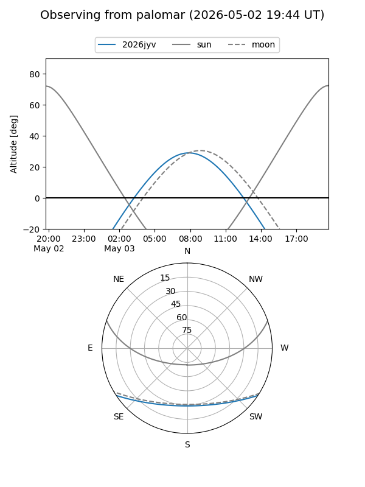
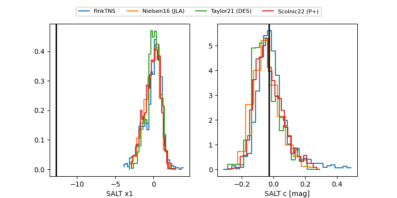

2026jyv
Target 2026jyv at 2026-04-28 14:16
Aliases and brokers:
FINK: link
Lasair: link
ALeRCE: link
TNS: link
YSE: link
alt names
ZTF26aasoanj (ztf,fink_ztf)
2026jyv (tns,yse)
Coordinates:
equatorial (ra, dec) = 222.3087,-27.48898
equatorial (HMS+DMS) = 14:49:14.08,-27:29:20.31
galactic (l, b) = (332.6838,+28.49130)
Flags:
likely cv
Photometry:
last atlasc=16.23, atlaso=16.40, ztfg=16.33, ztfr=16.50
1 atlasc, 6 atlaso, 4 ztfg, 3 ztfr detections
Lightcurve

Visibility


Additional plots
